Lesson 25: checking-spelling-and-grammar
Lesson 25: Checking Spelling and Grammar
/en/word/charts/content/
Introduction
Worried about making mistakes when you type? Don't be. Word provides you with several proofing features—including the Spelling and Grammar tool—that can help you produce professional, error-free documents.
Watch the video below to learn more about using the Spelling and Grammar tool.

To run a Spelling and Grammar check:
- From the Review tab, click the Spelling & Grammar command.
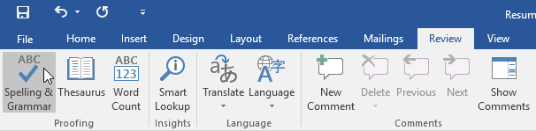
2. The Spelling and Grammar pane will appear on the right. For each error in your document, Word will offer one or more suggestions. Click a suggestion to correct the error.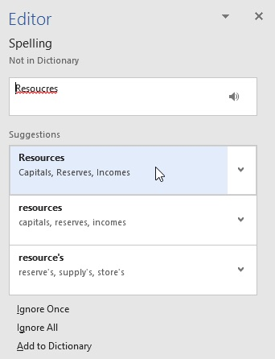
3. Word will move through each error until you have reviewed all of them. After the last error has been reviewed, a dialog box will appear confirming that the spelling and grammar check is complete. Click OK.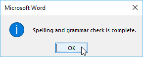
If no suggestions are given, you can manually type the correct spelling in your document.
Ignoring "errors"
The spelling and grammar check is not always correct. Particularly with grammar, there are many errors Word will not notice. There are also times when the spelling and grammar check will say something is an error when it's actually not. This often happens with names and other proper nouns, which may not be in the dictionary.
If Word says something is an error, you can choose not to change it. Depending on whether it's a spelling or grammatical error, you can choose from several options.
For spelling "errors":
- Ignore Once: This will skip the word without changing it.
- Ignore All: This will skip the word without changing it, and it will also skip all other instances of the word in the document.
- Add to Dictionary: This adds the word to the dictionary so it will never come up as an error. Make sure the word is spelled correctly before choosing this option.
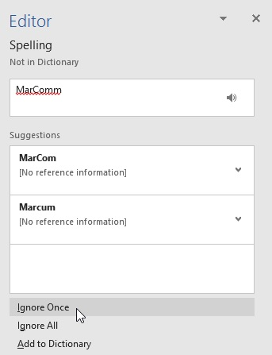
For grammar "errors":
- Ignore Once: This will skip the word or phrase without changing it.
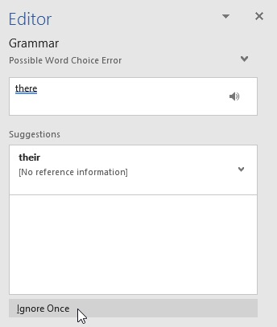
Automatic spelling and grammar checking
By default, Word automatically checks your document for spelling and grammar errors, so you may not even need to run a separate check. These errors are indicated by colored lines below the text.
- The red line indicates a misspelled word.
- The blue line indicates a grammatical error, which can include misused words.
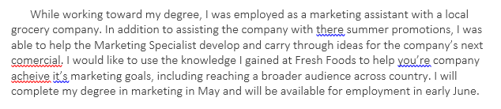
A misused word—also known as a contextual spelling error—occurs when a word is spelled correctly but used incorrectly. For example, if you used the phrase Deer Mr. Theodore at the beginning of a letter, deer would be a contextual spelling error. Deer is spelled correctly, but it is used incorrectly in the letter. The correct word is Dear.
To correct spelling errors:
- Right-click the underlined word, then select the correct spelling from the list of suggestions.
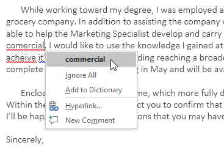
2. The corrected word will appear in the document.You can also choose to Ignore All instances of an underlined word or add it to the dictionary.
To correct grammar errors:
- Right-click the underlined word or phrase, then select the correct spelling or phrase from the list of suggestions.
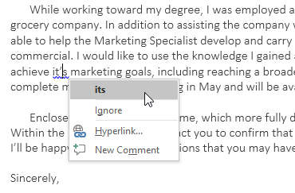
2. The corrected phrase will appear in the document.To change the automatic spelling and grammar check settings:
- Click the File tab to access Backstage view, then click Options.
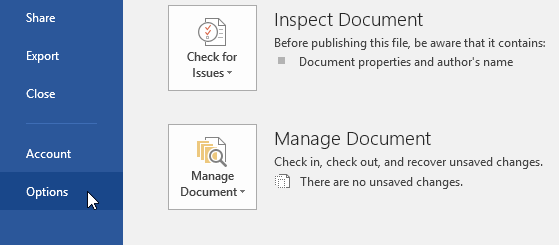
2. A dialog box will appear. On the left side of the dialog box, select Proofing. From here, you have several options to choose from. For example, if you don't want Word to mark spelling errors, grammar errors, or frequently confused words automatically, simply uncheck the desired option.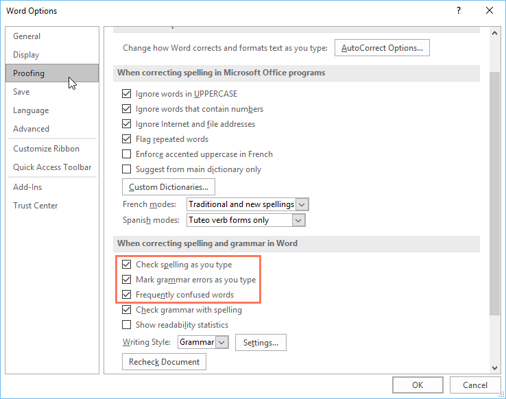
If you've turned off the automatic spelling and/or grammar checks, you can still go to the Review tab and click the Spelling & Grammar command to run a new check.
To hide spelling and grammar errors in a document:
If you're sharing a document like a resume with someone, you might not want that person to see the red and blue lines. Turning off the automatic spelling and grammar checks only applies to your computer, so the lines may still show up when someone else views your document. Fortunately, Word allows you to hide spelling and grammar errors so the lines will not show up on any computer.
- Click the File tab to go to Backstage view, then click Options.
- A dialog box will appear. Select Proofing, then check the box next to Hide spelling errors in this document only and Hide grammar errors in this document only,then click OK.
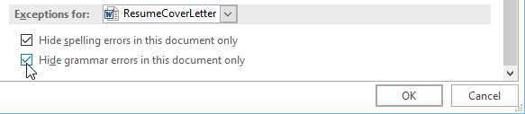
3. The lines in the document will be hidden.Challenge!
- Open our practice document. If you already downloaded our practice document to follow along with the lesson, be sure to download a fresh copy by clicking the link in this step.
- Run a Spelling & Grammar check.
- Ignore the spelling of names like Marcom.
- Correct all other spelling and grammar mistakes.
- When you're finished, your document should look like this:
/en/word/track-changes-and-comments/content/